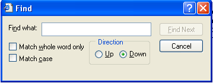
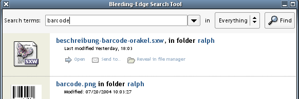
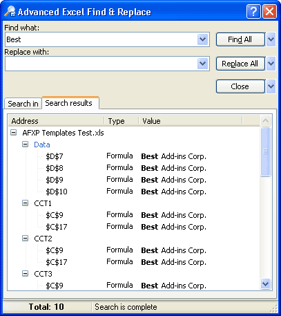
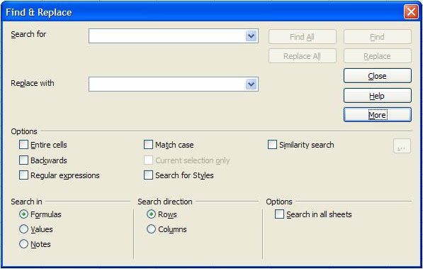
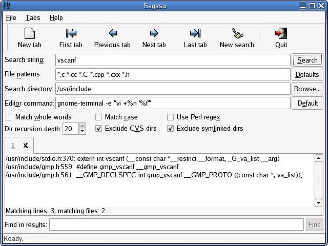
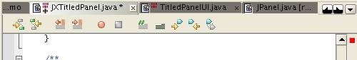
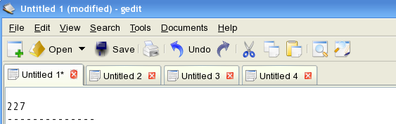
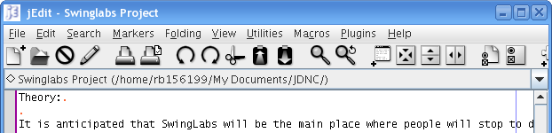

J*Table Features
Swing's JTable component and the JDNC extensions of JTable, JXTable
and JNTable, are key elements of many desktop applications. This
document is an overview of the features to be provided by the JDNC
table classes. When we've finished sorting out the details of how
these features are to be realized, this document may become a useful
companion to the javadoc spec.
JTable's purpose is displaying potentially large grids of data. Each
column in the grid has a type and rows and columns are 0 indexed.
Unlike a spreadsheet, the number of columns is expected to small
(typically less than 100), while the number of columns can be
relatively large (often tens of thousands). A JTable's data must be
wrapped with a TableModel, which defines a simple access API as well
as listeners for change notification. JTable cells are rendered with
a CellRenderer component that's used to map raw cell valu es to their
visual representation. JTable columns can be reordered and resized.
JTables are usually added to JScrollPane components, which support
scolling and column headings.
The JDNC table components add many major features to JTable: data
binding, sorting, filtering, searching, highlighting, and support for
dynamically creating multiple views of the table's model. These
features are intended to transform JTable from a simple grid viewer
and editor, to more of an analysis tool. Many of the features
can be configured by the end user and applications that use the JDNC
table may support saving and restoring those configurations.
- Data Binding
As with all the JDNC "JN" components, JNTable will supporting data
binding. This document will not cover the generic JDNC data binding
support however table specific data binding features, like
initial column ordering and selection, will be covered here.
- Sorting
Stable sorting of columns with the usual column heading visuals
and user selectable column sorting keys.
- Filtering
User configurable row filtering based on constraints that apply
to entire rows or columns. Support for interactive construction
of complex filters. Support for selecting among predefined
filters.
- Searching
Incremental (emacs-style) search for a string keyword with all of
the usual options (wrap, case sensitve, etc).
- Highlighting
User configurable mappping from constraints about column values
to a small number of color and font settings. Support for selecting
among predefined highlights.
- Multiple Views
Create multiple views of the same table model with a tabbed pane.
Support dynamic creation/deletion of tabs. Each view would
have its own binding for filter, sort, highlight.
- Printing
Print all rows or the selected rows or a subset defined
with a string (like "1-5 23 501-543"). User also
selects which columns to print and may choose among
predefined table printing styles
- Export to PDF
Options as for printing.
Other features TBD: A simple "analysis" API. Compute properties of
the selected rows and popup a dialog with the results. Simple way to
connect the table to a status panel that shows loading progress, summary
statistics, selection information, etc.
For the moment, in all of the sections that follow, please imagine that
a paragraph qualifying the material as "just Hans's opinion" had been
included at the top. I would like reach consensus on the features listed
here, and when we do, I'll remove the imaginary paragraphs.
Searching
Quickly find a single row that matches a query string. All worthwhile
document viewers support this kind of search. The shape of the basic
search feature has several dimensions: prompting for the query,
keyboard bindings, match options, incremental or batch matching,
displaying a match. Support for markers, so that
the user can quickly return to a row, or quickly cycle through a set
of rows, would be nice to have but is not essential.
Prompting for the Query
Traditionally this has been done by popping up a dialog that also
includes all of the match options (see below). This is convenient
since dialog's GUI can be designed independently from whatever the
table is part of. On the other hand using a popup dialog to drive
frequent searches can be tedious.
JDNC should provide both a dialog box and a one or two line panel and
give developers the option of using either one or both (or to create
their own prompt).
It should be possible to search efficiently without using the mouse.
This implies that keyboard shortcuts should exist for configuring the
search scope, and for directing the search backwards or forwards.
The user must be able to define the Query's scope: which columns (or
all of them) should the query apply to. Queries against "all" columns
may apply to columns that aren't visible however some users may find
this confusing. It may also be useful to be able to apply a query to
just the selected rows or to highlighted rows. If we get the multiple
views support right, than it may be sufficient for users to do this
kind of thing in two steps: first create a view that contains only
the selected or highlighted rows, then search the new view.
The query text field should include a history menu, so that searching
for the same couple of strings (in particular scopes) repeatedly can
be done efficiently. Developers should be able to pre-populate this
menu.
Here are some find GUI screenshots from popular applications that
might inspire features of our own GUI. My take on all of them
is that a one-line query prompt, like in Beagle or Firefox is
what we want. A one-line prompt can accomodate a combo box
for recovering recently entered query strings and another
one for selecting search scope.
- FireFox Find Panel
Firefox find panel - no search term history or scoping controls
This panel appears at the bottom of the browser window, above the
status bar. It's activated when you type control-F. Search is
incremental - the text selection that represents the match moves
each time you hit a key. I think the panel would work better if
it appeared above the table, where the user is more likely to notice
it. Our version of this kind of panel would need to be integrated
with GUI that supported defining search scope.
- IE Find Panel

IE Find panel - no search term history, a few matching options.
This is panel that comes up when you type control-F at IE6. There's no
search history and to redirect a search you've got to change the
"Direction" radio buttons and then hit the "Find" button. The Firefox
panel, with its up and down arrow buttons, deals with this task
more simply. The Thunderbird control-F find dialog is very similar.
- Beagle Find Prompt

Beagle's query field including search term history and scope combo box.
Beagle is Novell's highly hyped desktop search and Mono/C# showcase
app. There's surprisingly little support for scoping the search -
just the combo box - however ease of use often comes from doing less.
Search results are listed below since showing them in-situ would be
impractical. I don't think we'd want to do that (show a list of
search results) however there are some Excel add-ons that do, see
below.
- Excel Advanced Find Dialog

Excel "Advanced" Find Dialog. Don't let this happen to you.
This is an "Advanced Find and Replace" dialog add-on you can buy
if you've got major league searching to do. And you're insane.
- Star Office 8, Spreadsheet Search

Star Office 8.0 (beta) spreadsheet search dialog showing all options.
The spreadsheet search dialog from Star Office 8 beta. There are many
relevant options here however probably more than most people would
ever use. Note that most of the options aren't visible by default,
I've pressed the "More" button to expose all of them. I've come to
the conclusion that all the visual beef added by highly flexible
search dialogs (or panels) isn't worth the trouble. Just to prove the
point, here's another one that's gone a bit off the flexibility
deep-end.
- Unknown Desktop Search Tool

This may be a version of gnome-search-tool
A desktop search GUI for Unix afficianados. Arguing that less is more
by adding this screenshot probably undercuts the argument so I'll stop
here. There's even a search field for searching within the search results.
Keyboard Bindings
[TBD - a complete list of keyboard bindings related to search. If there's a
UI spec for J*Table, defer to that for the definitive word on keyboard bindings.]
Match Options
Since search is not visualization, flexibility in match semantics can
be relatively limited. In other words, it's probably not neccessary
to support regular expressions, numeric constraints, or other complex
search queries. That kind of flexibility belongs in the table
filtering and highlight features.
Search should apply to the table view that's visible and only to the
visible rows in that view.
As noted earlier, the built-in query prompt GUI should give the user
a way to define the scope of the search to a subset of the columns or
all of them. All columns should be the default.
Case sensitive matching or not, default is case insensitive. Perhaps
this shouldn't be a user visible option.
Partial world matching or not, default is partial. Perhaps this
shouldn't be a user visible option.
Search order: row major or column major, default is row major. This probably
should not be a user visible option. A query might match a single row
more than once. Asking for the next match should always advance to
another matching row, if there is one.
A simple search query history should be maintained, so that users
can easily reapply recently entered query strings.
Many find dialogs include a cancel button. I'm not sure if this
is just for dismissing the dialog or if there are situations where
the user might want to interrupt a search that's taking too long.
Perhaps we need to support running searches in a separate thread?
An advanced search panel that allowed super-users to submit
fancy queries, like: "rows that contain both foo and bar"
could be useful.
Find and replace should be integrated.
Incremental or Batch Matching
Incremental search means that a new match is searched for after
every keystroke. This can make searching very efficient, since the
user only needs to type enough of the search string to find what
they're looking for. Batch matching means that the search is only
started after the user enters the complete query (and hits return
or presses a "find" button or whatever).
Incremental search should be the default. An option for disabling
incremental search could be provided although perhaps only in the API.
Displaying a Match
The simplest thing to do is just to move the keyboard focus highlight
to the next matching row and make sure that row is visible.
Moving the selection (or extending it, as GNUEmacs does) around might
seem too disruptive. An alternative would be to create a
special highlight that represented a search match. I've seen table
viewers that allocate a narrow column to the left of the table
so that they can draw an arrow next to the selected row, or the row
that's lined up with the database cursor.
Cell renderers that were aware of the current match could try and
highlight the match in-situ. This would be somewhat difficult for
ordinary developers to do. JDNC would have to provide cell renderers
that could do it.
In some cases it may be useful to report match statistics,
like number of matches or even a summary list of all of the
matches. This can get out of hand, e.g. see the
"Excel Advanced File Dialog" item above.
"Gutters", special columns to the left or the right of the table,
can be used to display row markers, e.g. a special icon for rows that match. Netbeans
uses gutters extensively; gutter icons correspond to errors and warnings
and breakpoints and so on, popups provide extra information about each one.
Multiple Views
The basic goal here is to support interactive creation of multiple
views of the same table model. Each view would have its own
configuration for filtering, sorting, and highlighting and
applications would be encouraged to save and restore view
configurations
Creating Views
By default we'll bind control-T to an action that creates a new
view tab with a view that's identical the current one. The
application will be able to provide a name for the new tab and we'll
give the user a way to change it.
Other interactive tabbed view creation possibilities:
-
Create a "default" view, i.e. one that matches the initial
view of the table with the initial configuration for highlighting
and filtering.
-
Create a view that contains only the selected rows
or everything but the selected rows.
-
Create a view that contains only the rows with one (or more)
highlights.
-
Add the selected rows to another view. This
be accomplished through drag and drop or cut and paste.
-
Remove the selected rows from the current view.
The features listed above would have to be exposed in a menu somewhere.
This could be a right button menu for the tabbed pane itself.
Interactive View Management with Tabs
This section covers rearranging, and deleting tabbed views. Beyond
just deleting tabs, the features that one could provide include:
-
A tab panel right button menu with options for creating,
moving, and deleting tabs.
-
Actions for moving the tab panel around, to the top/bottom, etc.
-
Tab renaming. One could support this with an in-place editor
or with a popup. An overacheiver would also provide a combo
box for selecting an icon that would appear along with the text.
-
Support for reordering tabs via direct manipulation or
special menu items.
Here are some examples of tabbed view GUIs.
- FireFox Tabs, Tab Menu

FireFox Tabs, Tab Menu. Tab delete button is on the right.
Firefox tabs can be created with an "open as tab" menu item
or with control-T. Control-Tab and Control-Shift-Tab
Cycles through the open tabs forward or backward respectively.
Tabs are deleted with the button on the right. This is efficient
for deleting five or six in a row but not as intuitive as including
a dismiss button on each tab. It's also a little more economical
in terms of horizontal space.
- NetBeans Tabs

Netbeans tabs with horizontal scrolling support, in situ dismiss button, etc.
Netbeans tabs pack quite a lot into a small space. There's a tiny
dismiss button on the right, and not not much whitespace anywhere.
The left/right arrow buttons on the right scroll the entire row of
tabs (note that the leftmost tab is clipped) and the downwards arrow
next to those provides a view menu.
- GEdit Tabs

GEdit Tabs with in situ dismiss button.
Note shown here are two nice features:
there's a big tab tooltip that provides a brief summary of the file buffer.
There's also a right button menu on the tab, that provides a bunch of buffer options.
Note shown here are the arrow buttons that appear on the left and right edges
of the tab panel, when there are more tabs than will fit.
- JEdit - Combobox View Selection

JEdit uses a combo box to select a file buffer view
JEdit uses a combo box to select a file buffer view, rather than tabs.
This has some advantages: it scales to arbitrarily large numbers of views
and it allows one to allocate all available horizontal space to information
about the current view (full pathnames fit!). Selecting views is probably
a little bit less efficient and one could argue that there's some benefit
in being able to see the complete set of available views at a glance.
It would be straightforward to provide this approach as an J*Table option.
Two Level Tabs
One way to accomodate a large number of views is to add
a row of secondary view selection buttons in a panel below
the tabs. This changes the problem from just selecting a
view to selecting a view category and a view.
This approach is often used in browser GUIs:
- CNet's Shopping Site
Two level hierarchical view selection, shopper.cnet.com
This is one of the better browser examples of this kind of GUI.
The fact that the button panel's background is different from
the tab panel breaks the tab metaphor a little however I doubt
most users would notice or care.
- Amazon.com
Amazon's tabs plus view selection links GUI
Amazon's GUI is one of the oldest (HTML) examples I know of.
It's also surprisingly ugly. They get credit for highlighting
both the selected tab and the selected subcategory.
An alternative to the two level tabs approach is to provide a
tree/outline view of the categories and views in a panel
on the left with the selected view on the right. The MS
file (system) explorer could be viewed as a generalization
of this idea.
Splitting
Support for creating horizontal of vertical splits of a single view
makes it easier to compare different parts of a table.
JNTable Discussion
Notes from JDNC brain storming meeting on J*Table. I've been
deleting the notes as they're incorporated into the document.
Need a new descriptive name for JNTable
VIEWS
Name, save, delete, view, filter, sort order ... configurations
- rearranging columns - e.g. being able to scroll columns from end to
beginning (bumping up against end will scroll), moving group of
columns, popup dialogs to do ordering of columns
- being able to reset order of columns to default
- Undo/redo
-click single button to autosize columns (min, prefer, max sizes) (in
excel, if you click on the divider between - widen column to widest
cell contents) For column or for the whole table
- shrink back to default size
- table zoom in/out ( perhaps be able to see overview)
- multiple cell renderers per column
- how to deal with too many multiple tabs (scrolling tabs)
COLUMN Tooltips
- column and cell tooltips show up automatically
ROW ANNOTATION -bookmarking
-temporary or persistent annotation - something like a personal post-it
HIGHLIGHTING -
e.g. selecting rows and be able to highlight rows manually.
filter editor style highlight defnition
highlight properties
- background & foreground, throbbing (or fade in/out)
FILTER
-Fast
- Being able to create based on expressions
- Create a filter based on a row/cell (e.g. email clients)
- select from canned
- user defined parameterized filter
- apply multiple filters
- filter editor
PRINTING
- print selections
-export to pdf
- export to html